##range currently set to not drop any obs (centimeters)min_size <-14max_size <-80min(sttj_yt$YEAR,na.rm =TRUE)
[1] "1983"
min_year <-1983max_year <-2022break_year <-2005# this is an optional value to denote a change in management. inclusive on the upper bound. can be set to NA if not relevant. 2005 trap specifications were updated and many closures went into place####################################################################### ## TABLES START HERE ####################################################################### table(sttj_yt$OBS_STANDARD_SPECIES_NAME, useNA='always')
BY HAND; DIVING GEAR DIP NETS
1 109
ENCIRCLING NETS (PURSE) ENTANGLING NETS (GILL) UNSPC
363 48
GILL NETS; OTHER GRABS; HOOKS
20 1
HAUL SEINES HOOKS; SPONGE
556 38
LINES HAND LINES LONG SET WITH HOOKS
15276 4
LINES LONG; REEF FISH LINES POWER TROLL OTHER
109 544
NOT CODED POTS AND TRAPS; BOX TRAP
27 6
POTS AND TRAPS; CMB POTS AND TRAPS; FISH
78 2155
POTS AND TRAPS; SPINY LOBSTER REEL; ELECTRIC OR HYDRAULIC
64 139
ROD AND REEL ROD AND REEL; ELECTRIC (HAND)
361 124
SPEARS SPEARS; DIVING
1 1
<NA>
0
BY HAND; DIVING GEAR DIP NETS
1 109
ENCIRCLING NETS (PURSE) ENTANGLING NETS (GILL) UNSPC
363 48
GILL NETS; OTHER GRABS; HOOKS
20 1
HAUL SEINES HOOKS; SPONGE
556 38
LINES HAND LINES LONG SET WITH HOOKS
15276 4
LINES LONG; REEF FISH LINES POWER TROLL OTHER
109 544
NOT CODED POTS AND TRAPS; BOX TRAP
27 6
POTS AND TRAPS; CMB POTS AND TRAPS; FISH
78 2155
POTS AND TRAPS; SPINY LOBSTER REEL; ELECTRIC OR HYDRAULIC
64 139
ROD AND REEL ROD AND REEL; ELECTRIC (HAND)
361 124
SPEARS SPEARS; DIVING
1 1
<NA>
0
Extract marfin samples, look at island distribution
ST JOHN ST THOMAS <NA>
2008 4 3 0
2009 9 861 0
2010 9 1433 0
2011 21 1833 0
2012 0 991 0
<NA> 0 0 0
ST JOHN ST THOMAS <NA>
LINES HAND 21 4610 0
NOT CODED 0 13 0
POTS AND TRAPS; CMB 10 28 0
POTS AND TRAPS; FISH 12 460 0
POTS AND TRAPS; SPINY LOBSTER 0 4 0
ROD AND REEL 0 6 0
<NA> 0 0 0
, , = ST JOHN
2008 2009 2010 2011 2012 <NA>
LINES HAND 0 0 0 21 0 0
NOT CODED 0 0 0 0 0 0
POTS AND TRAPS; CMB 4 6 0 0 0 0
POTS AND TRAPS; FISH 0 3 9 0 0 0
POTS AND TRAPS; SPINY LOBSTER 0 0 0 0 0 0
ROD AND REEL 0 0 0 0 0 0
<NA> 0 0 0 0 0 0
, , = ST THOMAS
2008 2009 2010 2011 2012 <NA>
LINES HAND 0 761 1309 1690 850 0
NOT CODED 0 0 0 13 0 0
POTS AND TRAPS; CMB 0 21 6 1 0 0
POTS AND TRAPS; FISH 3 79 118 125 135 0
POTS AND TRAPS; SPINY LOBSTER 0 0 0 4 0 0
ROD AND REEL 0 0 0 0 6 0
<NA> 0 0 0 0 0 0
, , = NA
2008 2009 2010 2011 2012 <NA>
LINES HAND 0 0 0 0 0 0
NOT CODED 0 0 0 0 0 0
POTS AND TRAPS; CMB 0 0 0 0 0 0
POTS AND TRAPS; FISH 0 0 0 0 0 0
POTS AND TRAPS; SPINY LOBSTER 0 0 0 0 0 0
ROD AND REEL 0 0 0 0 0 0
<NA> 0 0 0 0 0 0
CAST NETS ENCIRCLING NETS (PURSE) HOOKS, SPONGE
BY HAND; DIVING GEAR 0 0 0
DIP NETS 0 0 0
ENCIRCLING NETS (PURSE) 0 30 0
ENTANGLING NETS (GILL) UNSPC 0 0 0
GILL NETS; OTHER 0 0 0
GRABS; HOOKS 0 0 0
HAUL SEINES 0 0 0
HOOKS; SPONGE 0 0 0
LINES HAND 0 0 0
LINES LONG SET WITH HOOKS 0 0 0
LINES LONG; REEF FISH 0 0 0
LINES POWER TROLL OTHER 0 0 0
NOT CODED 0 0 0
POTS AND TRAPS; BOX TRAP 0 0 0
POTS AND TRAPS; CMB 0 0 0
POTS AND TRAPS; FISH 0 14 42
POTS AND TRAPS; SPINY LOBSTER 0 0 0
REEL; ELECTRIC OR HYDRAULIC 0 0 0
ROD AND REEL 15 0 0
ROD AND REEL; ELECTRIC (HAND) 0 0 0
SPEARS 0 0 0
SPEARS; DIVING 0 0 0
LINES HAND LINES LONG, REEF FISH
BY HAND; DIVING GEAR 0 0
DIP NETS 0 0
ENCIRCLING NETS (PURSE) 0 0
ENTANGLING NETS (GILL) UNSPC 0 0
GILL NETS; OTHER 0 0
GRABS; HOOKS 0 0
HAUL SEINES 0 0
HOOKS; SPONGE 0 0
LINES HAND 458 8
LINES LONG SET WITH HOOKS 0 0
LINES LONG; REEF FISH 0 1
LINES POWER TROLL OTHER 0 0
NOT CODED 0 0
POTS AND TRAPS; BOX TRAP 0 0
POTS AND TRAPS; CMB 0 0
POTS AND TRAPS; FISH 70 8
POTS AND TRAPS; SPINY LOBSTER 0 0
REEL; ELECTRIC OR HYDRAULIC 0 0
ROD AND REEL 17 0
ROD AND REEL; ELECTRIC (HAND) 0 0
SPEARS 0 0
SPEARS; DIVING 0 0
LINES POWER TROLL OTHER NOT CODED
BY HAND; DIVING GEAR 0 0
DIP NETS 0 0
ENCIRCLING NETS (PURSE) 0 0
ENTANGLING NETS (GILL) UNSPC 0 0
GILL NETS; OTHER 0 0
GRABS; HOOKS 0 0
HAUL SEINES 0 0
HOOKS; SPONGE 0 0
LINES HAND 0 0
LINES LONG SET WITH HOOKS 0 0
LINES LONG; REEF FISH 0 0
LINES POWER TROLL OTHER 192 0
NOT CODED 0 13
POTS AND TRAPS; BOX TRAP 0 0
POTS AND TRAPS; CMB 0 0
POTS AND TRAPS; FISH 73 0
POTS AND TRAPS; SPINY LOBSTER 0 0
REEL; ELECTRIC OR HYDRAULIC 0 0
ROD AND REEL 0 0
ROD AND REEL; ELECTRIC (HAND) 0 0
SPEARS 0 0
SPEARS; DIVING 0 0
POTS AND TRAPS, FISH
BY HAND; DIVING GEAR 0
DIP NETS 0
ENCIRCLING NETS (PURSE) 0
ENTANGLING NETS (GILL) UNSPC 0
GILL NETS; OTHER 0
GRABS; HOOKS 0
HAUL SEINES 0
HOOKS; SPONGE 0
LINES HAND 26
LINES LONG SET WITH HOOKS 0
LINES LONG; REEF FISH 0
LINES POWER TROLL OTHER 0
NOT CODED 0
POTS AND TRAPS; BOX TRAP 0
POTS AND TRAPS; CMB 6
POTS AND TRAPS; FISH 110
POTS AND TRAPS; SPINY LOBSTER 0
REEL; ELECTRIC OR HYDRAULIC 0
ROD AND REEL 0
ROD AND REEL; ELECTRIC (HAND) 0
SPEARS 0
SPEARS; DIVING 0
POTS AND TRAPS, SPINY LOBSTER
BY HAND; DIVING GEAR 0
DIP NETS 0
ENCIRCLING NETS (PURSE) 0
ENTANGLING NETS (GILL) UNSPC 0
GILL NETS; OTHER 0
GRABS; HOOKS 0
HAUL SEINES 0
HOOKS; SPONGE 0
LINES HAND 0
LINES LONG SET WITH HOOKS 0
LINES LONG; REEF FISH 0
LINES POWER TROLL OTHER 0
NOT CODED 0
POTS AND TRAPS; BOX TRAP 0
POTS AND TRAPS; CMB 7
POTS AND TRAPS; FISH 66
POTS AND TRAPS; SPINY LOBSTER 19
REEL; ELECTRIC OR HYDRAULIC 0
ROD AND REEL 0
ROD AND REEL; ELECTRIC (HAND) 0
SPEARS 0
SPEARS; DIVING 0
REEL, ELECTRIC OR HYDRAULIC ROD AND REEL
BY HAND; DIVING GEAR 0 0
DIP NETS 0 0
ENCIRCLING NETS (PURSE) 0 0
ENTANGLING NETS (GILL) UNSPC 0 0
GILL NETS; OTHER 0 0
GRABS; HOOKS 0 0
HAUL SEINES 0 0
HOOKS; SPONGE 0 0
LINES HAND 0 5
LINES LONG SET WITH HOOKS 0 0
LINES LONG; REEF FISH 0 0
LINES POWER TROLL OTHER 0 0
NOT CODED 0 0
POTS AND TRAPS; BOX TRAP 0 0
POTS AND TRAPS; CMB 0 0
POTS AND TRAPS; FISH 1 0
POTS AND TRAPS; SPINY LOBSTER 0 0
REEL; ELECTRIC OR HYDRAULIC 0 0
ROD AND REEL 0 2
ROD AND REEL; ELECTRIC (HAND) 0 0
SPEARS 0 0
SPEARS; DIVING 0 0
Add gear groupings, NO length-length conversions available
Hook and Line Net Other Trap <NA>
BY HAND; DIVING GEAR 0 0 1 0 0
DIP NETS 0 0 109 0 0
ENCIRCLING NETS (PURSE) 0 363 0 0 0
ENTANGLING NETS (GILL) UNSPC 0 48 0 0 0
GILL NETS; OTHER 0 20 0 0 0
GRABS; HOOKS 0 0 1 0 0
HAUL SEINES 0 556 0 0 0
HOOKS; SPONGE 0 0 38 0 0
LINES HAND 15276 0 0 0 0
LINES LONG SET WITH HOOKS 0 0 4 0 0
LINES LONG; REEF FISH 0 0 109 0 0
LINES POWER TROLL OTHER 544 0 0 0 0
NOT CODED 0 0 20 0 0
POTS AND TRAPS; BOX TRAP 0 0 0 6 0
POTS AND TRAPS; CMB 0 0 0 78 0
POTS AND TRAPS; FISH 0 0 0 2148 0
POTS AND TRAPS; SPINY LOBSTER 0 0 0 64 0
REEL; ELECTRIC OR HYDRAULIC 139 0 0 0 0
ROD AND REEL 361 0 0 0 0
ROD AND REEL; ELECTRIC (HAND) 124 0 0 0 0
SPEARS 0 0 1 0 0
SPEARS; DIVING 0 0 1 0 0
<NA> 0 0 0 0 0
Trip ID vs gear by year investigation
how many unique trip ID’s per year
#####group by year, count unique trip id’s When we remove data from years with less than 30 unique trip ID’s, we are left with only 12 years of data. IMO too few for assessment
There are years when individual gears occur less than 30 times but when grouped, the gear groups exceed 30 occurrences per year. Do we want to rely on gear groups with larger than 30 occurrences per year or individual gears with more than 30 occurrences?
YEAR LAND_STANDARD_GEAR_NAME count
1 1983 LINES HAND 102
2 1983 NOT CODED 2
3 1983 POTS AND TRAPS; FISH 45
4 1984 DIP NETS 109
5 1984 GRABS; HOOKS 1
6 1984 HOOKS; SPONGE 38
7 1984 LINES HAND 273
8 1984 POTS AND TRAPS; FISH 214
9 1984 POTS AND TRAPS; SPINY LOBSTER 6
10 1985 ENTANGLING NETS (GILL) UNSPC 48
11 1985 LINES HAND 181
12 1985 LINES LONG; REEF FISH 109
13 1985 LINES POWER TROLL OTHER 464
14 1985 POTS AND TRAPS; CMB 15
15 1985 POTS AND TRAPS; FISH 204
16 1986 LINES POWER TROLL OTHER 80
17 1986 POTS AND TRAPS; FISH 64
18 1987 POTS AND TRAPS; FISH 12
19 1988 POTS AND TRAPS; FISH 4
20 1991 POTS AND TRAPS; FISH 4
21 1992 ENCIRCLING NETS (PURSE) 127
22 1992 LINES HAND 110
23 1992 POTS AND TRAPS; FISH 46
24 1993 ENCIRCLING NETS (PURSE) 126
25 1993 LINES HAND 151
26 1993 POTS AND TRAPS; CMB 1
27 1993 POTS AND TRAPS; FISH 57
28 1994 ENCIRCLING NETS (PURSE) 1
29 1994 LINES HAND 152
30 1994 POTS AND TRAPS; FISH 19
31 1994 POTS AND TRAPS; SPINY LOBSTER 3
32 1995 ENCIRCLING NETS (PURSE) 13
33 1995 LINES HAND 172
34 1995 POTS AND TRAPS; CMB 3
35 1995 POTS AND TRAPS; FISH 26
36 1995 POTS AND TRAPS; SPINY LOBSTER 7
37 1996 LINES HAND 182
38 1996 POTS AND TRAPS; FISH 6
39 2002 LINES HAND 37
40 2002 POTS AND TRAPS; CMB 8
41 2002 POTS AND TRAPS; FISH 24
42 2003 POTS AND TRAPS; FISH 3
43 2004 POTS AND TRAPS; BOX TRAP 6
44 2005 LINES HAND 335
45 2005 POTS AND TRAPS; FISH 8
46 2005 POTS AND TRAPS; SPINY LOBSTER 15
47 2006 HAUL SEINES 182
48 2006 LINES HAND 944
49 2006 LINES LONG SET WITH HOOKS 4
50 2006 POTS AND TRAPS; CMB 7
51 2006 POTS AND TRAPS; FISH 31
52 2008 POTS AND TRAPS; CMB 4
53 2008 POTS AND TRAPS; FISH 3
54 2009 ENCIRCLING NETS (PURSE) 30
55 2009 LINES HAND 962
56 2009 POTS AND TRAPS; CMB 30
57 2009 POTS AND TRAPS; FISH 166
58 2010 ENCIRCLING NETS (PURSE) 66
59 2010 HAUL SEINES 292
60 2010 LINES HAND 2033
61 2010 POTS AND TRAPS; CMB 6
62 2010 POTS AND TRAPS; FISH 189
63 2010 ROD AND REEL 18
64 2010 SPEARS 1
65 2011 HAUL SEINES 1
66 2011 LINES HAND 1765
67 2011 NOT CODED 13
68 2011 POTS AND TRAPS; CMB 1
69 2011 POTS AND TRAPS; FISH 130
70 2011 POTS AND TRAPS; SPINY LOBSTER 4
71 2011 ROD AND REEL 13
72 2012 HAUL SEINES 3
73 2012 LINES HAND 888
74 2012 POTS AND TRAPS; FISH 137
75 2012 ROD AND REEL 6
76 2013 LINES HAND 197
77 2013 POTS AND TRAPS; FISH 20
78 2013 POTS AND TRAPS; SPINY LOBSTER 4
79 2014 LINES HAND 47
80 2014 POTS AND TRAPS; FISH 2
81 2015 POTS AND TRAPS; FISH 12
82 2016 LINES HAND 653
83 2016 POTS AND TRAPS; FISH 92
84 2016 POTS AND TRAPS; SPINY LOBSTER 1
85 2016 REEL; ELECTRIC OR HYDRAULIC 6
86 2016 ROD AND REEL 49
87 2017 HAUL SEINES 69
88 2017 LINES HAND 1292
89 2017 POTS AND TRAPS; FISH 210
90 2017 POTS AND TRAPS; SPINY LOBSTER 1
91 2017 ROD AND REEL 17
92 2018 HAUL SEINES 7
93 2018 LINES HAND 1616
94 2018 POTS AND TRAPS; CMB 2
95 2018 POTS AND TRAPS; FISH 102
96 2018 ROD AND REEL 3
97 2019 HAUL SEINES 2
98 2019 LINES HAND 1865
99 2019 POTS AND TRAPS; FISH 136
100 2019 ROD AND REEL 38
101 2019 ROD AND REEL; ELECTRIC (HAND) 20
102 2020 LINES HAND 149
103 2020 POTS AND TRAPS; CMB 1
104 2020 POTS AND TRAPS; FISH 19
105 2020 ROD AND REEL 4
106 2021 BY HAND; DIVING GEAR 1
107 2021 LINES HAND 260
108 2021 POTS AND TRAPS; FISH 5
109 2021 REEL; ELECTRIC OR HYDRAULIC 48
110 2021 ROD AND REEL 57
111 2022 LINES HAND 386
112 2022 POTS AND TRAPS; FISH 43
113 2022 POTS AND TRAPS; SPINY LOBSTER 2
114 2022 REEL; ELECTRIC OR HYDRAULIC 85
115 2023 LINES HAND 492
116 2023 POTS AND TRAPS; FISH 51
117 2023 POTS AND TRAPS; SPINY LOBSTER 21
118 2023 ROD AND REEL 156
119 2023 ROD AND REEL; ELECTRIC (HAND) 104
120 2023 SPEARS; DIVING 1
YEAR LAND_STANDARD_GEAR_NAME count
1 1983 LINES HAND 102
2 1983 POTS AND TRAPS; FISH 45
3 1984 DIP NETS 109
4 1984 HOOKS; SPONGE 38
5 1984 LINES HAND 273
6 1984 POTS AND TRAPS; FISH 214
7 1985 ENTANGLING NETS (GILL) UNSPC 48
8 1985 LINES HAND 181
9 1985 LINES LONG; REEF FISH 109
10 1985 LINES POWER TROLL OTHER 464
11 1985 POTS AND TRAPS; FISH 204
12 1986 LINES POWER TROLL OTHER 80
13 1986 POTS AND TRAPS; FISH 64
14 1992 ENCIRCLING NETS (PURSE) 127
15 1992 LINES HAND 110
16 1992 POTS AND TRAPS; FISH 46
17 1993 ENCIRCLING NETS (PURSE) 126
18 1993 LINES HAND 151
19 1993 POTS AND TRAPS; FISH 57
20 1994 LINES HAND 152
21 1995 LINES HAND 172
22 1996 LINES HAND 182
23 2002 LINES HAND 37
24 2005 LINES HAND 335
25 2006 HAUL SEINES 182
26 2006 LINES HAND 944
27 2006 POTS AND TRAPS; FISH 31
28 2009 ENCIRCLING NETS (PURSE) 30
29 2009 LINES HAND 962
30 2009 POTS AND TRAPS; CMB 30
31 2009 POTS AND TRAPS; FISH 166
32 2010 ENCIRCLING NETS (PURSE) 66
33 2010 HAUL SEINES 292
34 2010 LINES HAND 2033
35 2010 POTS AND TRAPS; FISH 189
36 2011 LINES HAND 1765
37 2011 POTS AND TRAPS; FISH 130
38 2012 LINES HAND 888
39 2012 POTS AND TRAPS; FISH 137
40 2013 LINES HAND 197
41 2014 LINES HAND 47
42 2016 LINES HAND 653
43 2016 POTS AND TRAPS; FISH 92
44 2016 ROD AND REEL 49
45 2017 HAUL SEINES 69
46 2017 LINES HAND 1292
47 2017 POTS AND TRAPS; FISH 210
48 2018 LINES HAND 1616
49 2018 POTS AND TRAPS; FISH 102
50 2019 LINES HAND 1865
51 2019 POTS AND TRAPS; FISH 136
52 2019 ROD AND REEL 38
53 2020 LINES HAND 149
54 2021 LINES HAND 260
55 2021 REEL; ELECTRIC OR HYDRAULIC 48
56 2021 ROD AND REEL 57
57 2022 LINES HAND 386
58 2022 POTS AND TRAPS; FISH 43
59 2022 REEL; ELECTRIC OR HYDRAULIC 85
60 2023 LINES HAND 492
61 2023 POTS AND TRAPS; FISH 51
62 2023 ROD AND REEL 156
63 2023 ROD AND REEL; ELECTRIC (HAND) 104
YEAR gear count
1 1983 Hook and Line 102
2 1983 Trap 45
3 1984 Hook and Line 273
4 1984 Other 147
5 1984 Trap 214
6 1985 Hook and Line 645
7 1985 Net 48
8 1985 Other 109
9 1985 Trap 204
10 1986 Hook and Line 80
11 1986 Trap 64
12 1992 Hook and Line 110
13 1992 Net 127
14 1992 Trap 46
15 1993 Hook and Line 151
16 1993 Net 126
17 1993 Trap 57
18 1994 Hook and Line 152
19 1995 Hook and Line 172
20 1996 Hook and Line 182
21 2002 Hook and Line 37
22 2005 Hook and Line 335
23 2006 Hook and Line 944
24 2006 Net 182
25 2006 Trap 31
26 2009 Hook and Line 962
27 2009 Net 30
28 2009 Trap 196
29 2010 Hook and Line 2033
30 2010 Net 358
31 2010 Trap 189
32 2011 Hook and Line 1765
33 2011 Trap 130
34 2012 Hook and Line 888
35 2012 Trap 137
36 2013 Hook and Line 197
37 2014 Hook and Line 47
38 2016 Hook and Line 702
39 2016 Trap 92
40 2017 Hook and Line 1292
41 2017 Net 69
42 2017 Trap 210
43 2018 Hook and Line 1616
44 2018 Trap 102
45 2019 Hook and Line 1903
46 2019 Trap 136
47 2020 Hook and Line 149
48 2021 Hook and Line 365
49 2022 Hook and Line 471
50 2022 Trap 43
51 2023 Hook and Line 752
52 2023 Trap 51
YEAR LAND_STANDARD_GEAR_NAME count
1 1983 NOT CODED 2
2 1984 GRABS; HOOKS 1
3 1984 POTS AND TRAPS; SPINY LOBSTER 6
4 1985 POTS AND TRAPS; CMB 15
5 1987 POTS AND TRAPS; FISH 12
6 1988 POTS AND TRAPS; FISH 4
7 1991 POTS AND TRAPS; FISH 4
8 1993 POTS AND TRAPS; CMB 1
9 1994 ENCIRCLING NETS (PURSE) 1
10 1994 POTS AND TRAPS; FISH 19
11 1994 POTS AND TRAPS; SPINY LOBSTER 3
12 1995 ENCIRCLING NETS (PURSE) 13
13 1995 POTS AND TRAPS; CMB 3
14 1995 POTS AND TRAPS; FISH 26
15 1995 POTS AND TRAPS; SPINY LOBSTER 7
16 1996 POTS AND TRAPS; FISH 6
17 2002 POTS AND TRAPS; CMB 8
18 2002 POTS AND TRAPS; FISH 24
19 2003 POTS AND TRAPS; FISH 3
20 2004 POTS AND TRAPS; BOX TRAP 6
21 2005 POTS AND TRAPS; FISH 8
22 2005 POTS AND TRAPS; SPINY LOBSTER 15
23 2006 LINES LONG SET WITH HOOKS 4
24 2006 POTS AND TRAPS; CMB 7
25 2008 POTS AND TRAPS; CMB 4
26 2008 POTS AND TRAPS; FISH 3
27 2010 POTS AND TRAPS; CMB 6
28 2010 ROD AND REEL 18
29 2010 SPEARS 1
30 2011 HAUL SEINES 1
31 2011 NOT CODED 13
32 2011 POTS AND TRAPS; CMB 1
33 2011 POTS AND TRAPS; SPINY LOBSTER 4
34 2011 ROD AND REEL 13
35 2012 HAUL SEINES 3
36 2012 ROD AND REEL 6
37 2013 POTS AND TRAPS; FISH 20
38 2013 POTS AND TRAPS; SPINY LOBSTER 4
39 2014 POTS AND TRAPS; FISH 2
40 2015 POTS AND TRAPS; FISH 12
41 2016 POTS AND TRAPS; SPINY LOBSTER 1
42 2016 REEL; ELECTRIC OR HYDRAULIC 6
43 2017 POTS AND TRAPS; SPINY LOBSTER 1
44 2017 ROD AND REEL 17
45 2018 HAUL SEINES 7
46 2018 POTS AND TRAPS; CMB 2
47 2018 ROD AND REEL 3
48 2019 HAUL SEINES 2
49 2019 ROD AND REEL; ELECTRIC (HAND) 20
50 2020 POTS AND TRAPS; CMB 1
51 2020 POTS AND TRAPS; FISH 19
52 2020 ROD AND REEL 4
53 2021 BY HAND; DIVING GEAR 1
54 2021 POTS AND TRAPS; FISH 5
55 2022 POTS AND TRAPS; SPINY LOBSTER 2
56 2023 POTS AND TRAPS; SPINY LOBSTER 21
57 2023 SPEARS; DIVING 1
YEAR gear count
1 1983 Other 2
2 1987 Trap 12
3 1988 Trap 4
4 1991 Trap 4
5 1994 Net 1
6 1994 Trap 22
7 1995 Net 13
8 1996 Trap 6
9 2003 Trap 3
10 2004 Trap 6
11 2005 Trap 23
12 2006 Other 4
13 2008 Trap 7
14 2010 Other 1
15 2011 Net 1
16 2011 Other 13
17 2012 Net 3
18 2013 Trap 24
19 2014 Trap 2
20 2015 Trap 12
21 2018 Net 7
22 2019 Net 2
23 2020 Trap 20
24 2021 Other 1
25 2021 Trap 5
26 2023 Other 1
Gear Density Plots
Aggregated density plots
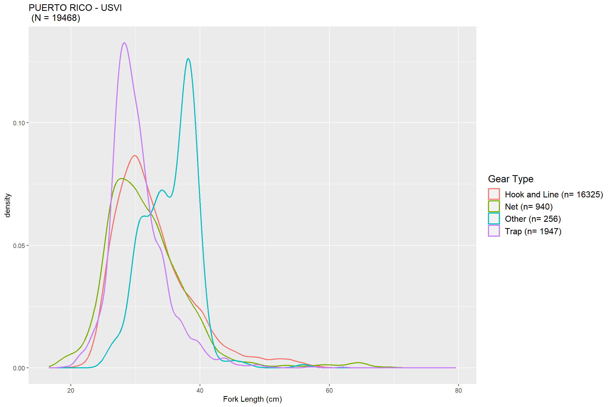
USVI TIP length comps by gear and interview type. Investigate if MARFIN and MRAG interview types can be used or should be dropped?
Gear grouping investigation
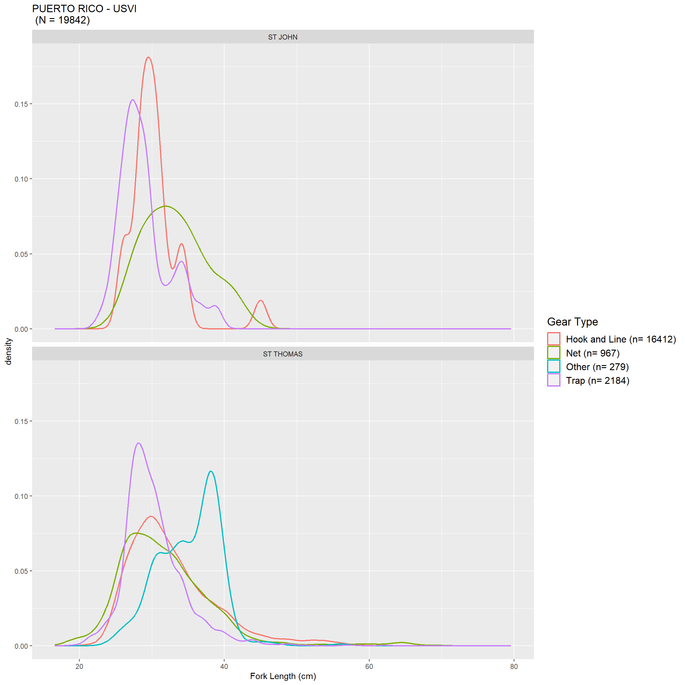
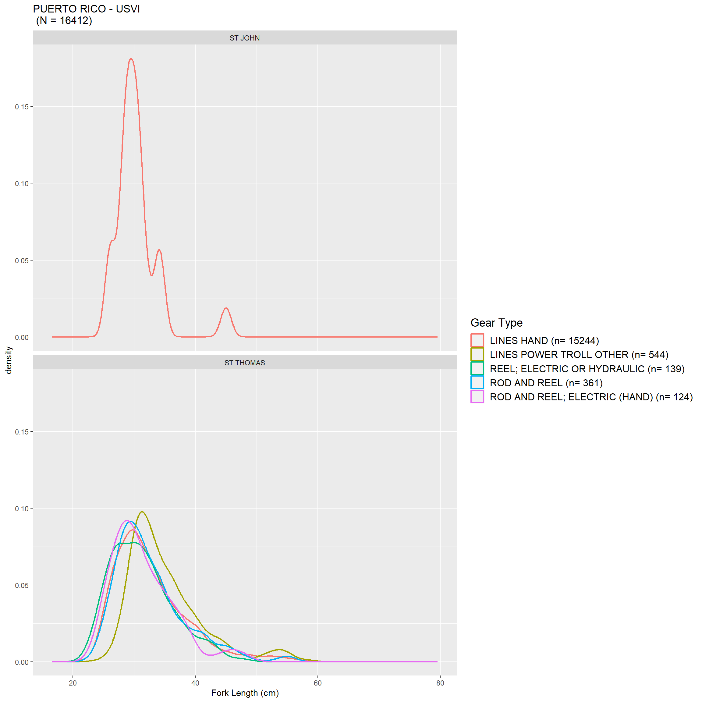
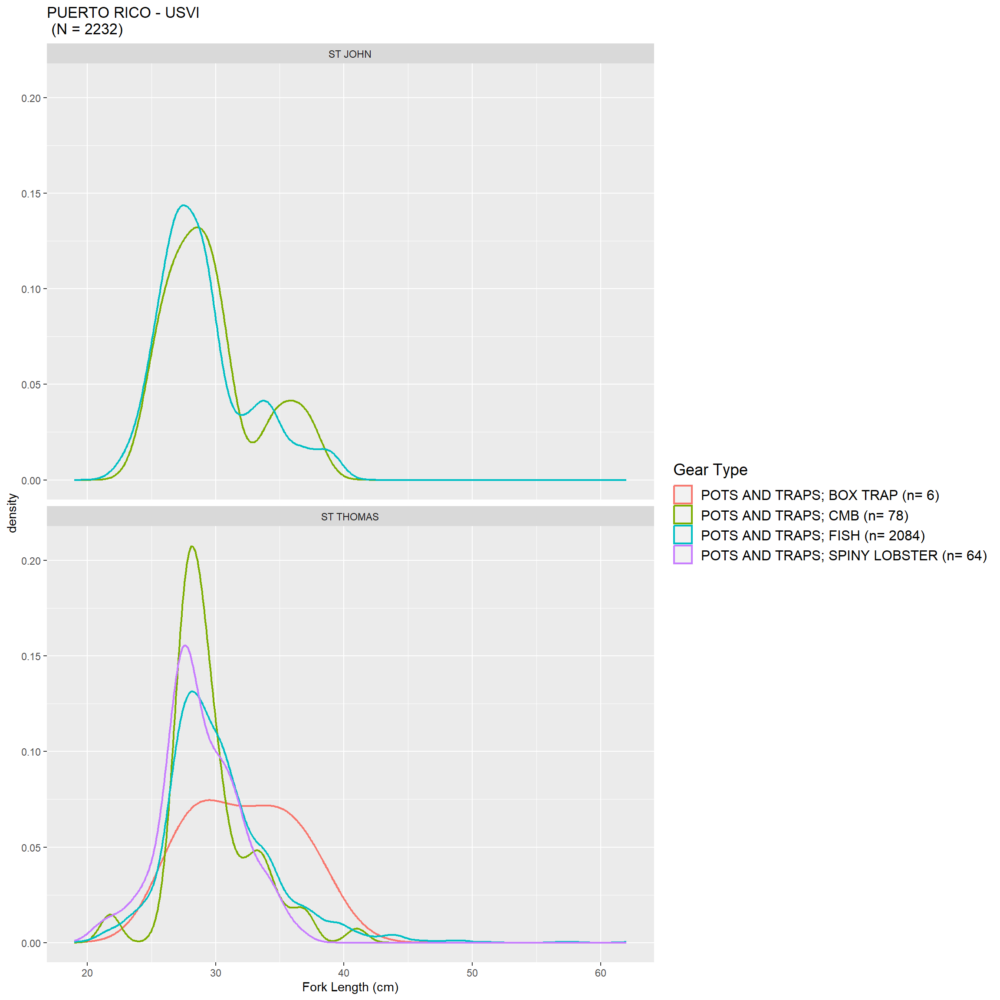
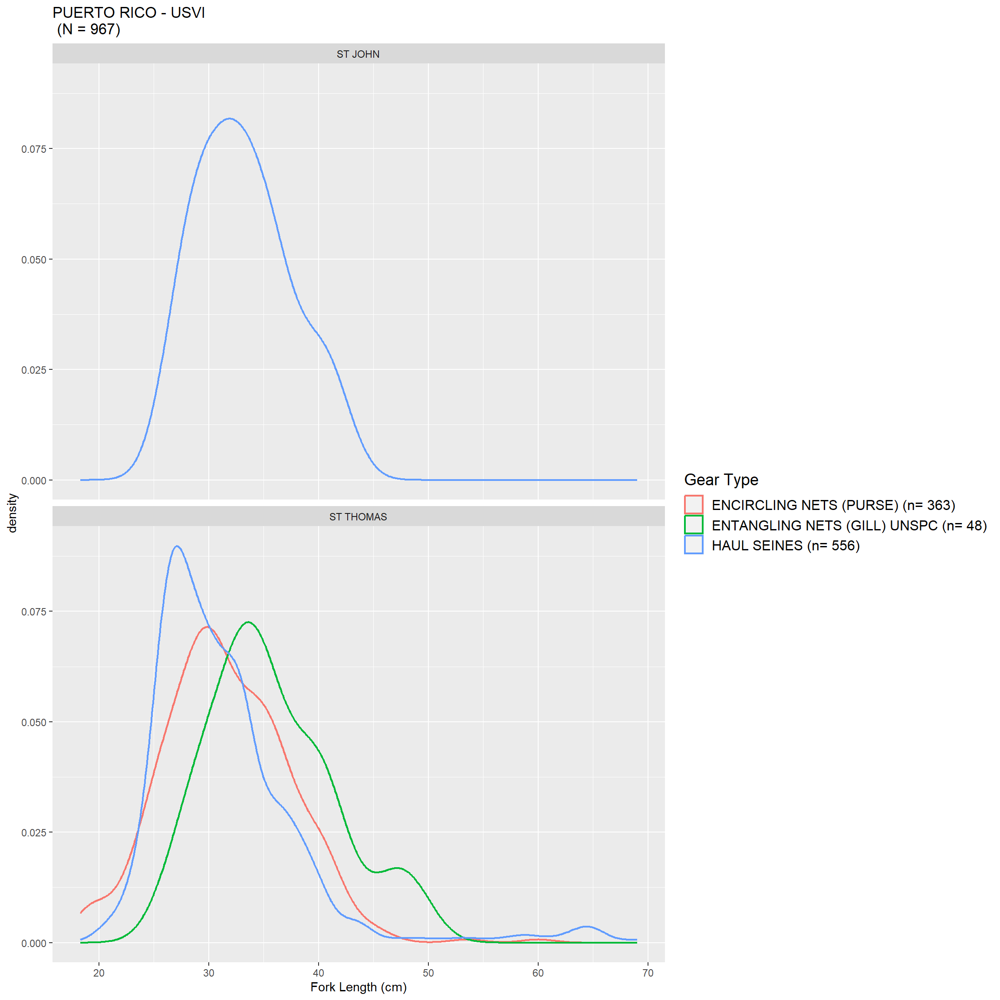
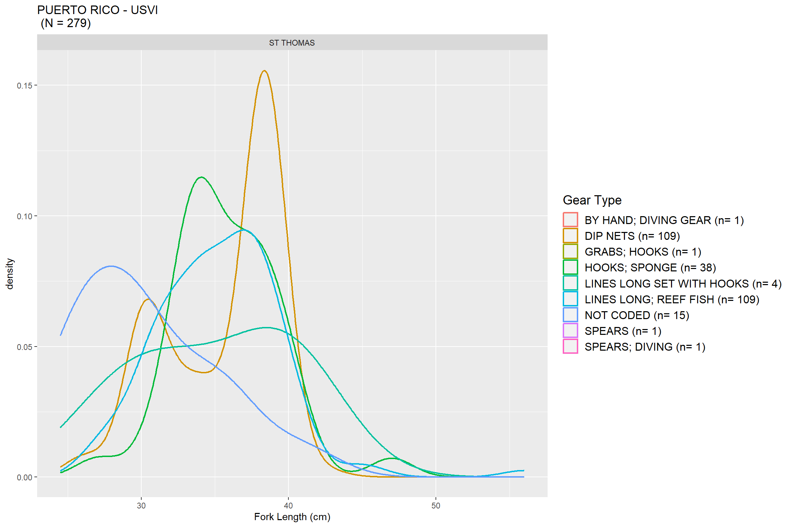
Break at 2005
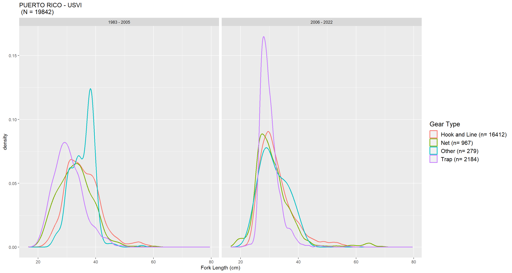
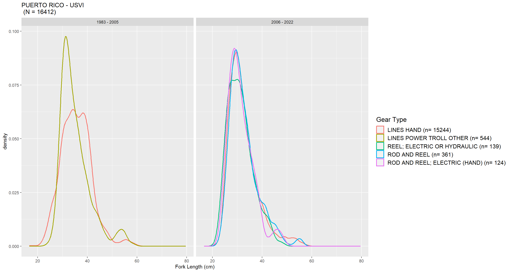
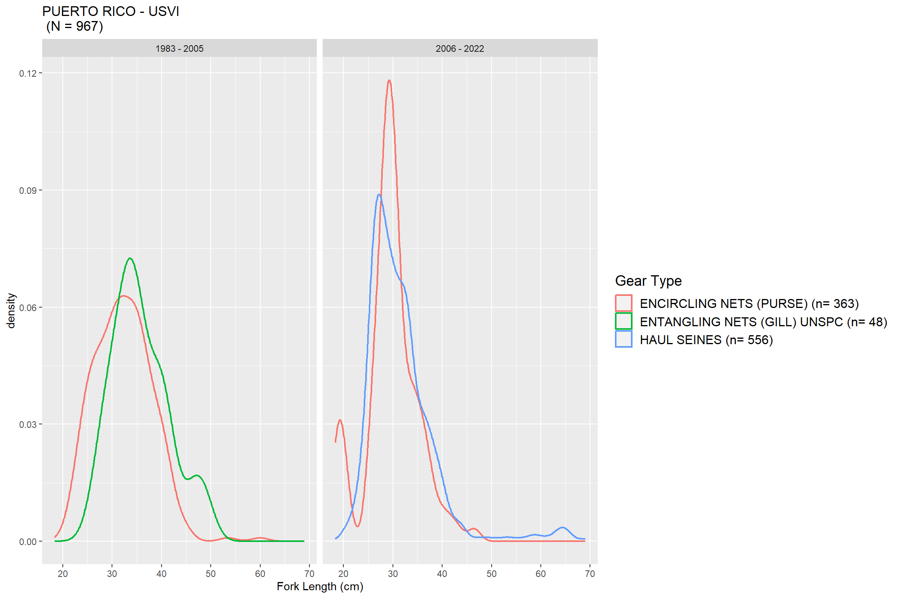
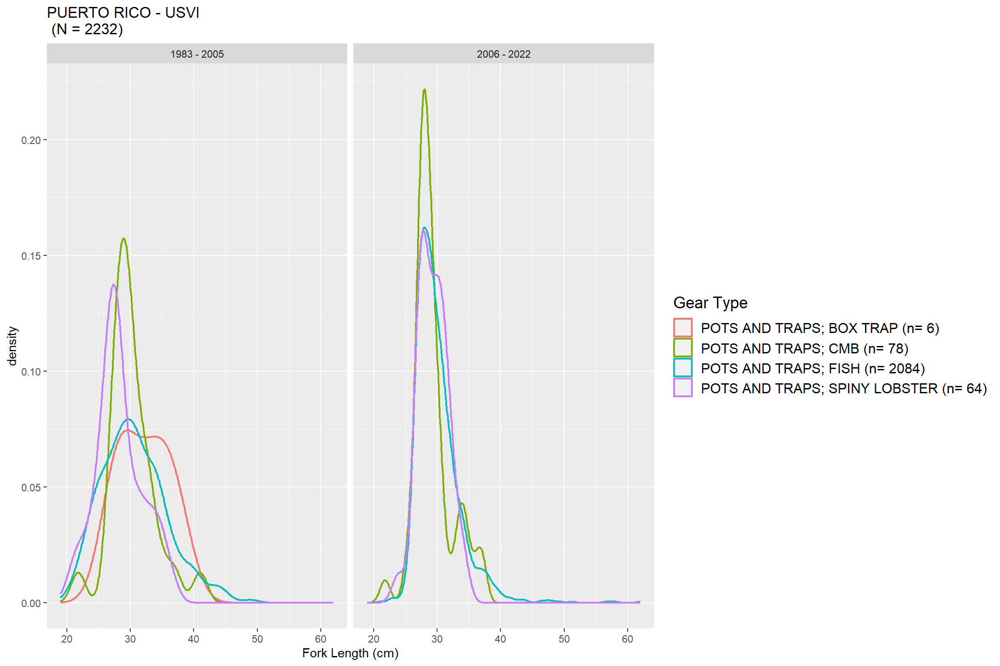
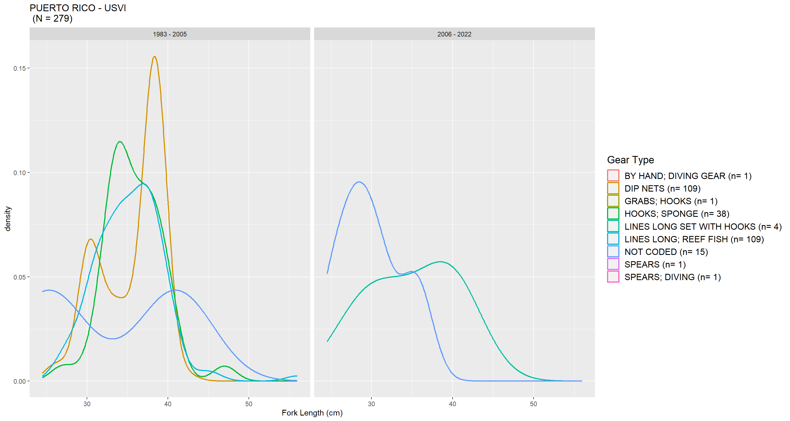
GLM analysis
# str(length_data_final)library(ggplot2)use_gear_hl <- length_data_final |>select(YEAR, FINAL_DATE, ID, COUNTY, FL_CM, LAND_STANDARD_GEAR_NAME, gear) |>filter(gear =="Hook and Line") |>mutate(ID =as.character(ID)) |>select(-gear)library(ggpubr)# Create box plot across yearsbox_plot <-ggboxplot(use_gear_hl, x ="LAND_STANDARD_GEAR_NAME", y ="FL_CM",color ="LAND_STANDARD_GEAR_NAME",ylab ="FL_CM", xlab ="LAND_STANDARD_GEAR_NAME")box_plot
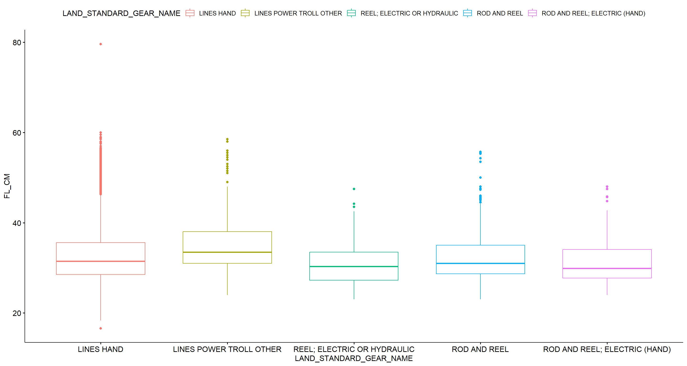
# Create density plot across yearsdensity_plot <-ggdensity(use_gear_hl, x ="FL_CM",add ="mean", rug =TRUE,color ="LAND_STANDARD_GEAR_NAME", fill ="LAND_STANDARD_GEAR_NAME",ylab ="FL_CM", xlab ="Gear")density_plot
# anova(mod2) #no p value given## pairwise comparisons (if needed)mod_contr = emmeans::emmeans(object = mod2, pairwise ~"LAND_STANDARD_GEAR_NAME", adjust ="tukey")mod_contr
$emmeans
LAND_STANDARD_GEAR_NAME emmean SE df asymp.LCL asymp.UCL
LINES HAND 3.45 0.0133 Inf 3.42 3.48
LINES POWER TROLL OTHER 3.41 0.0522 Inf 3.30 3.51
REEL; ELECTRIC OR HYDRAULIC 3.54 0.0737 Inf 3.40 3.69
ROD AND REEL 3.59 0.0290 Inf 3.53 3.65
ROD AND REEL; ELECTRIC (HAND) 3.47 0.0666 Inf 3.34 3.60
Results are given on the log (not the response) scale.
Confidence level used: 0.95
$contrasts
contrast estimate SE
LINES HAND - LINES POWER TROLL OTHER 0.0428 0.0527
LINES HAND - REEL; ELECTRIC OR HYDRAULIC -0.0911 0.0738
LINES HAND - ROD AND REEL -0.1420 0.0288
LINES HAND - ROD AND REEL; ELECTRIC (HAND) -0.0170 0.0662
LINES POWER TROLL OTHER - REEL; ELECTRIC OR HYDRAULIC -0.1338 0.0915
LINES POWER TROLL OTHER - ROD AND REEL -0.1848 0.0608
LINES POWER TROLL OTHER - ROD AND REEL; ELECTRIC (HAND) -0.0597 0.0850
REEL; ELECTRIC OR HYDRAULIC - ROD AND REEL -0.0510 0.0781
REEL; ELECTRIC OR HYDRAULIC - ROD AND REEL; ELECTRIC (HAND) 0.0741 0.0987
ROD AND REEL - ROD AND REEL; ELECTRIC (HAND) 0.1251 0.0704
df z.ratio p.value
Inf 0.811 0.9273
Inf -1.234 0.7316
Inf -4.926 <.0001
Inf -0.256 0.9991
Inf -1.462 0.5872
Inf -3.037 0.0202
Inf -0.703 0.9560
Inf -0.652 0.9663
Inf 0.751 0.9444
Inf 1.777 0.3873
Results are given on the log (not the response) scale.
P value adjustment: tukey method for comparing a family of 5 estimates
multcomp::cld(object = mod_contr$emmeans)
LAND_STANDARD_GEAR_NAME emmean SE df asymp.LCL asymp.UCL .group
LINES POWER TROLL OTHER 3.41 0.0522 Inf 3.30 3.51 1
LINES HAND 3.45 0.0133 Inf 3.42 3.48 1
ROD AND REEL; ELECTRIC (HAND) 3.47 0.0666 Inf 3.34 3.60 12
REEL; ELECTRIC OR HYDRAULIC 3.54 0.0737 Inf 3.40 3.69 12
ROD AND REEL 3.59 0.0290 Inf 3.53 3.65 2
Results are given on the log (not the response) scale.
Confidence level used: 0.95
P value adjustment: tukey method for comparing a family of 5 estimates
significance level used: alpha = 0.05
NOTE: If two or more means share the same grouping symbol,
then we cannot show them to be different.
But we also did not show them to be the same.
Annual Density plots
This will be split by final gear aggregations once these are decided, removes “other” gear types.
ST JOHN ST THOMAS
109 19781
ST JOHN ST THOMAS
109 19781
Stacked bar charts
Visual representation of gear distribution within groupings
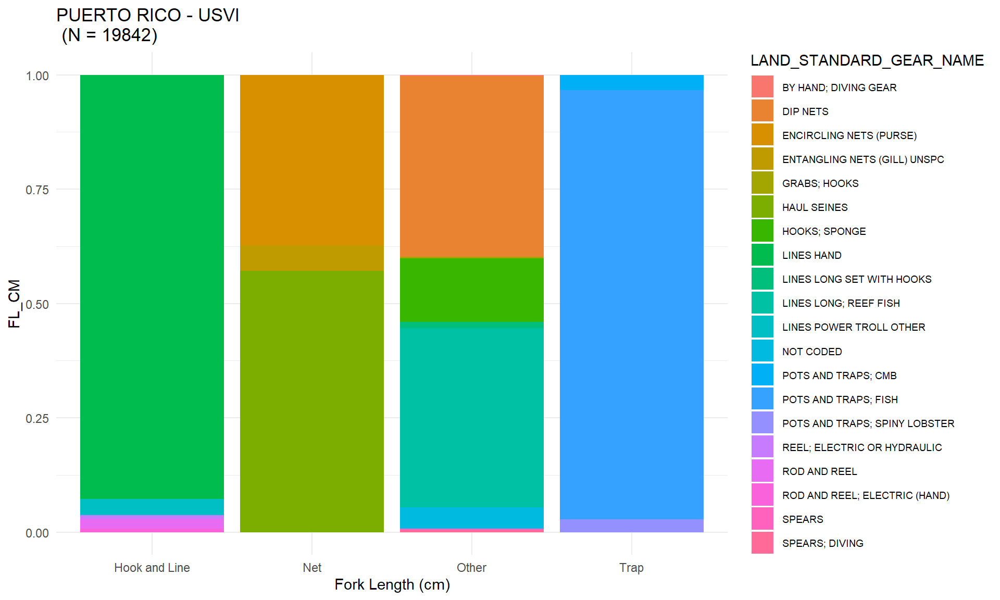
Gear distribution across time by gear groupings
All gears over time
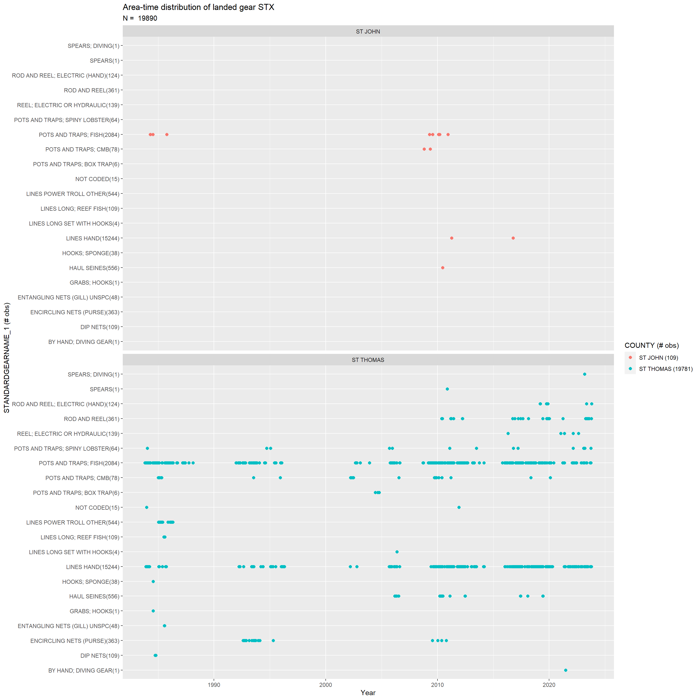
Stoplight Parrotfish LAND_STANDARD_GEAR_NAME STX
Hook and Line Gear Distribution Over Time by Year
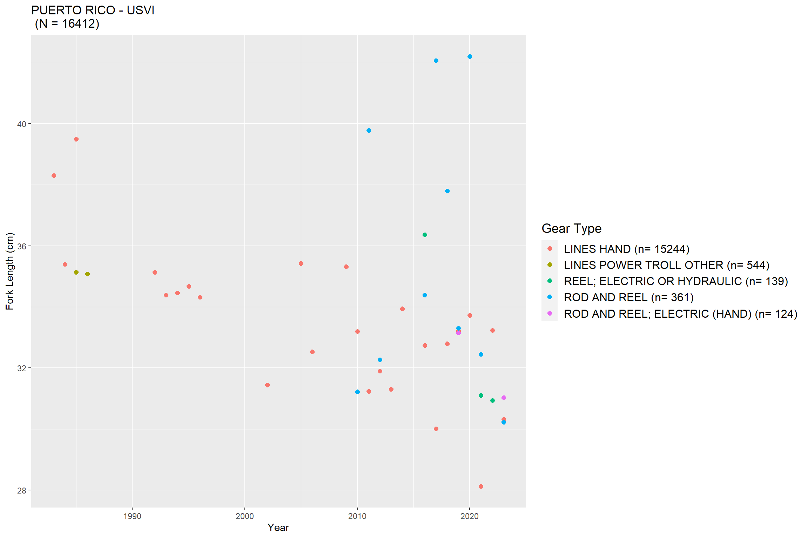
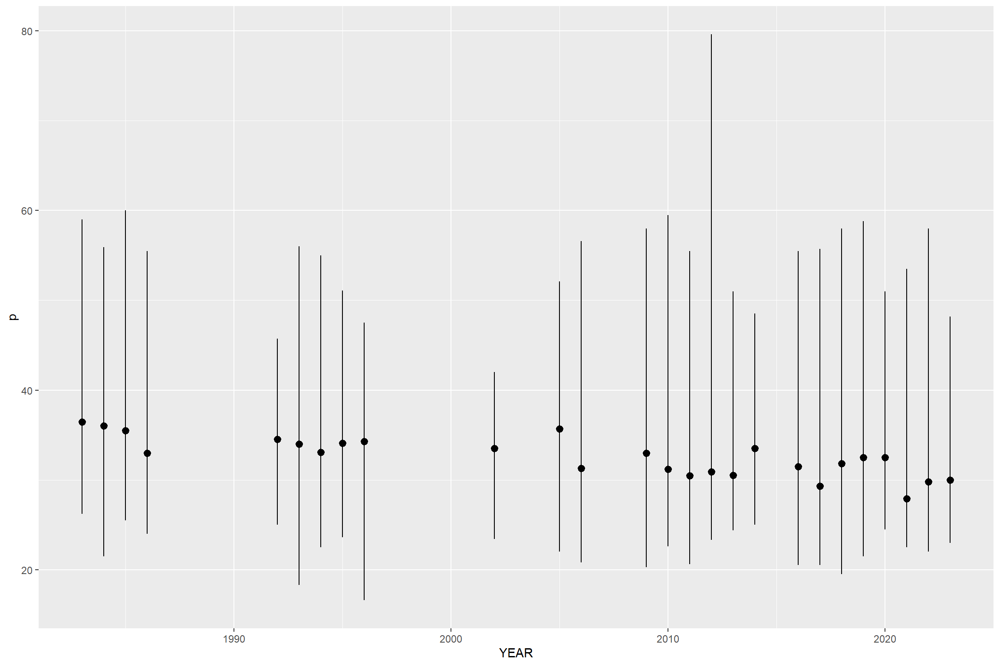
Trap Gear Distribution Over Time by Year
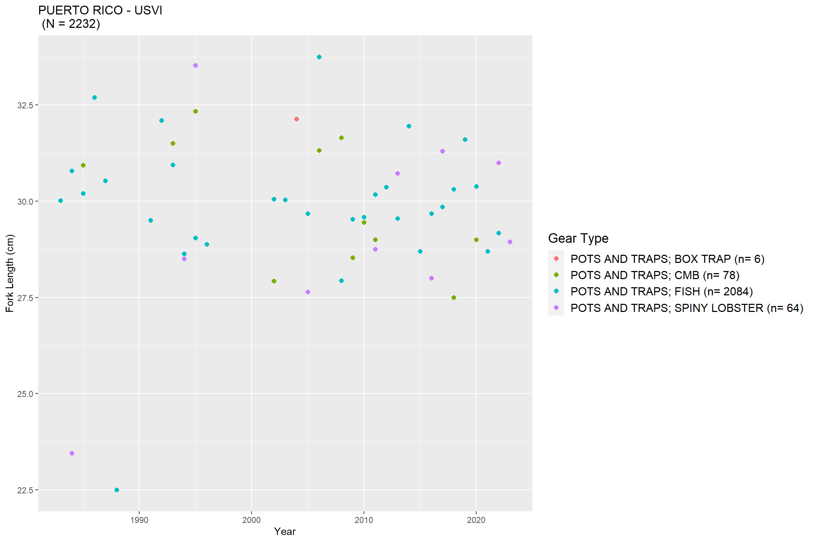
Diving Gear Distribution Over Time by Year - NO GEAR GROUPING
Net Gear Distribution Over Time by Year
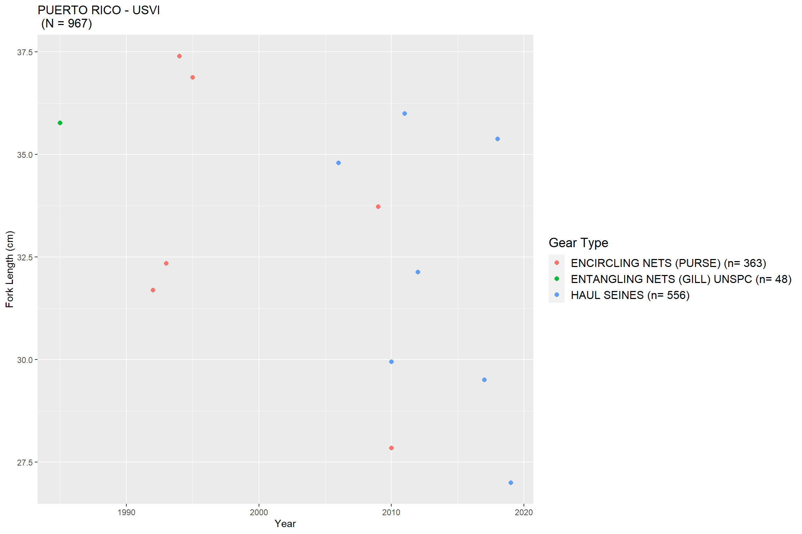
Spear Gear Distribution Over Time by Year - NO GROUPING
Other Gear Distribution Over Time by Year
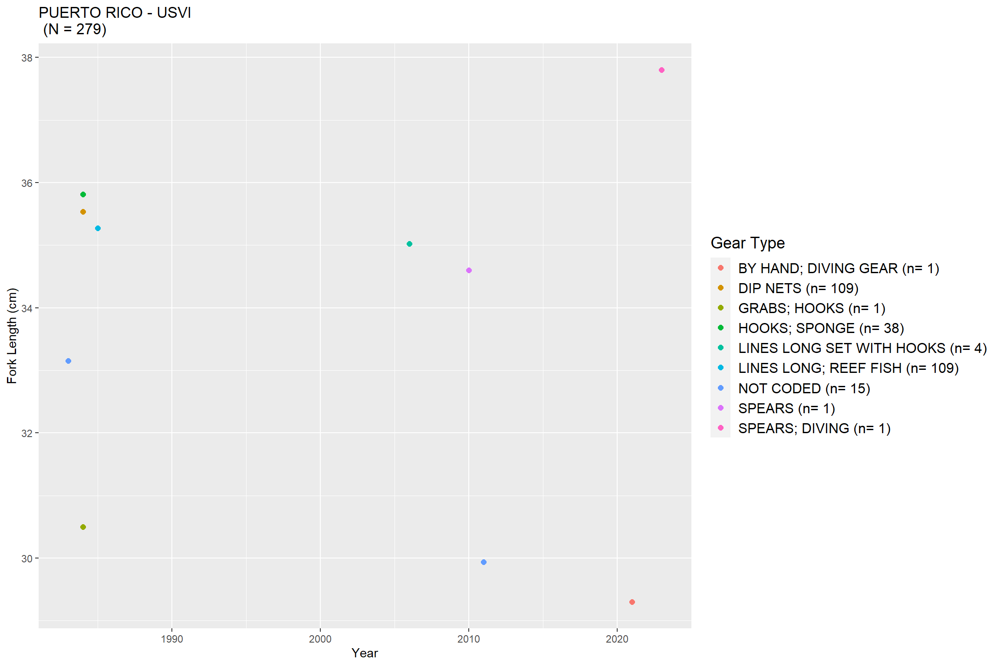
Cummulative Density Plots
Aggregated CDF
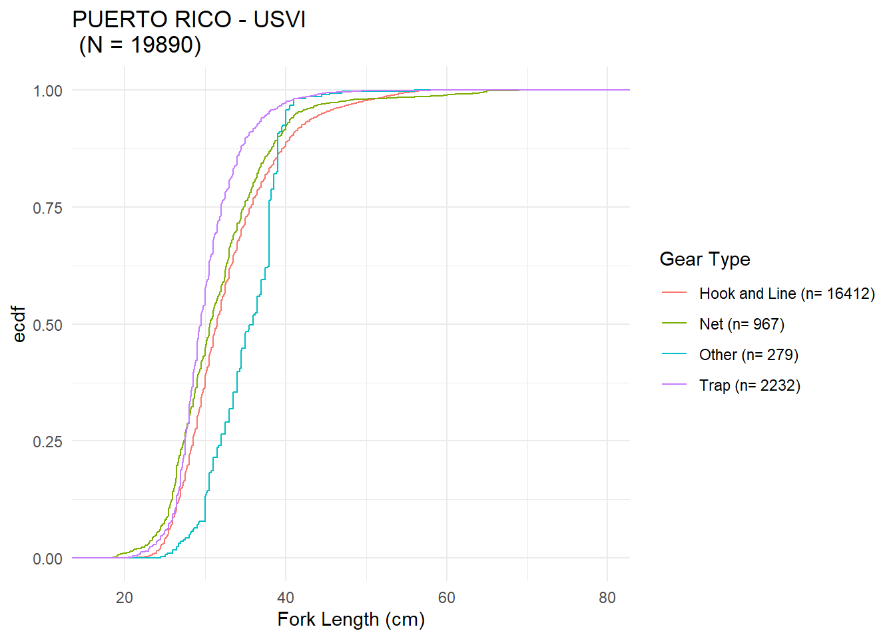
Management periods*
This section is optional and may be empty if there are not signifcant changes
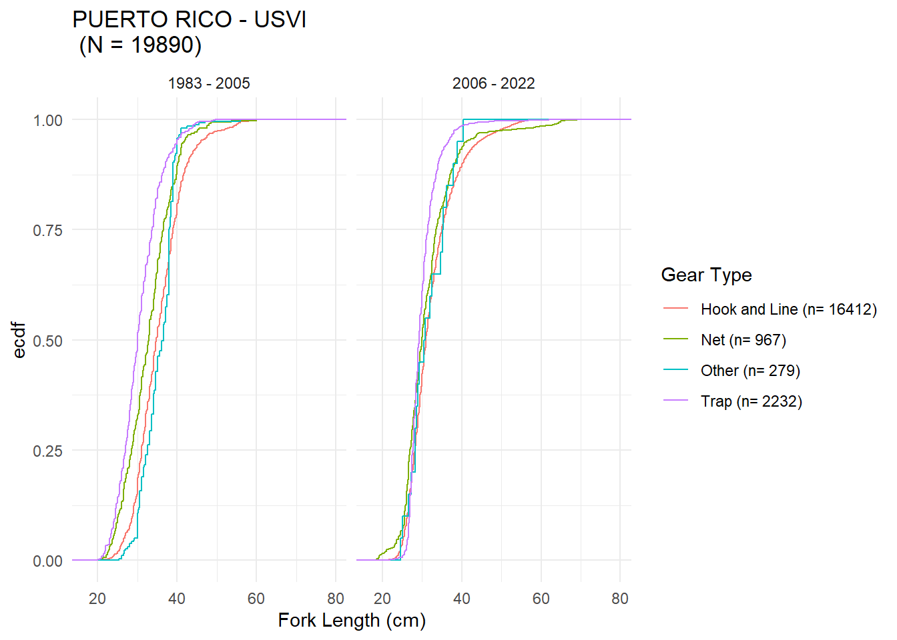
Annual CDF
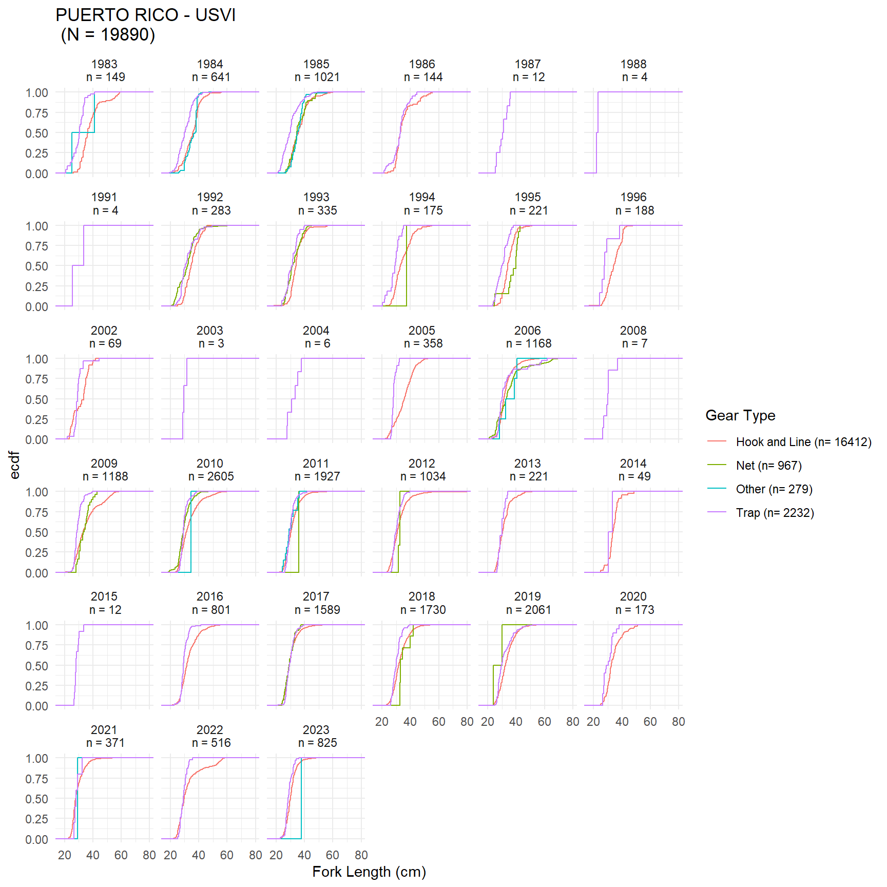
Island Density Plots
Aggregated density plots
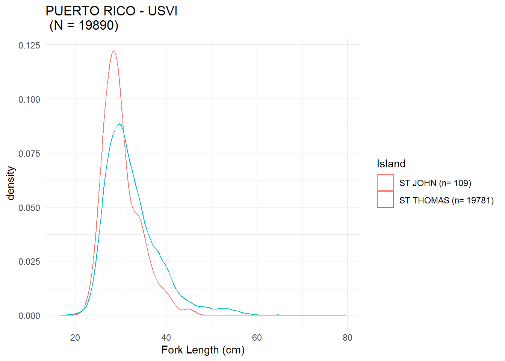
Management periods*
This section is optional and may be empty if there are not significant changes